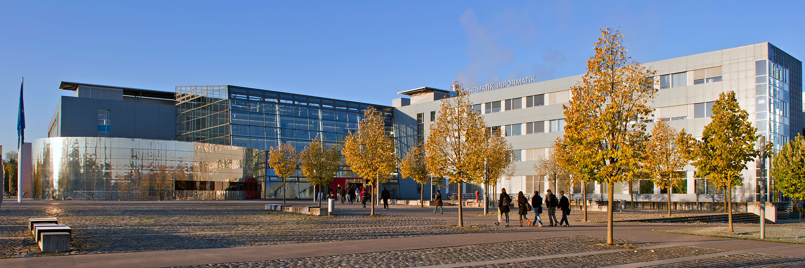
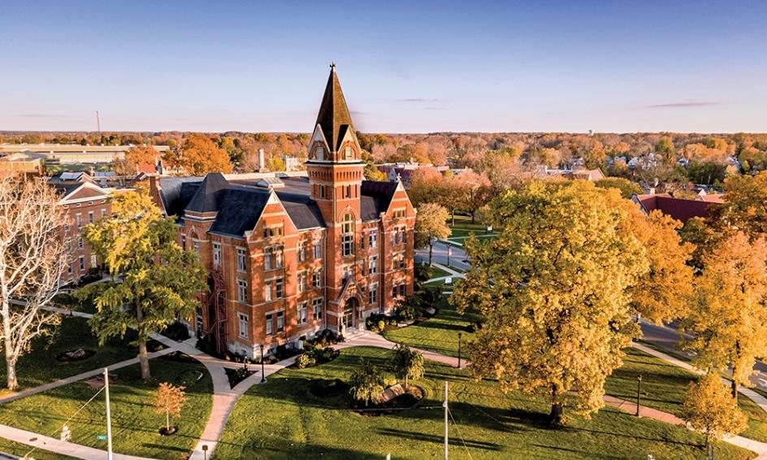
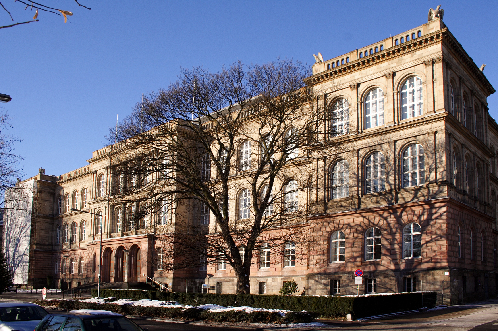

Top Universities in Germany

Technical University of Munich
Technical University of Munich is one of Germany's highest-ranked
universities. It is internationally recognised for engineering,
technology, computer science, and innovation. TUM has strong
connections with global industries and research institutions.
Location: Munich, Bavaria
Popular Courses:
• Computer Science
• Mechanical Engineering
• Electrical Engineering
• Artificial Intelligence
• Data Science
QS Ranking: Top 30 globally
International Students: 12,000+

Heidelberg University
Heidelberg University is Germany's oldest university and one of
the country's most respected research institutions. It is known
for medicine, life sciences, and international research projects.
Location: Heidelberg, Baden-Württemberg
Popular Courses:
• Medicine
• Life Sciences
• Physics
• Biotechnology
• International Studies
QS Ranking: Top 90 globally
International Students: 5,000+

LMU Munich
Ludwig Maximilian University of Munich (LMU) is one of Europe's
leading research universities. It is known for excellence in
science, medicine, economics, humanities, and social sciences.
Location: Munich, Bavaria
Popular Courses:
• Medicine
• Economics
• Psychology
• Biology
• Political Science
QS Ranking: Top 60 globally
International Students: 9,000+

RWTH Aachen University
RWTH Aachen University is one of Europe's leading engineering and
technology universities. It is highly respected for innovation,
research, and strong partnerships with industries.
Location: Aachen, North Rhine-Westphalia
Popular Courses:
• Mechanical Engineering
• Computer Science
• Electrical Engineering
• Civil Engineering
• Robotics
QS Ranking: Top 100 globally
International Students: 14,000+